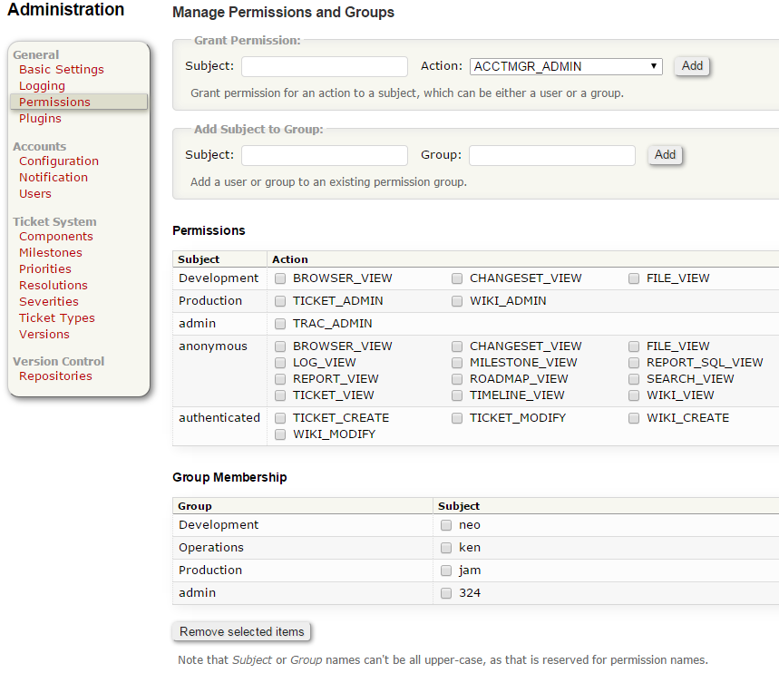
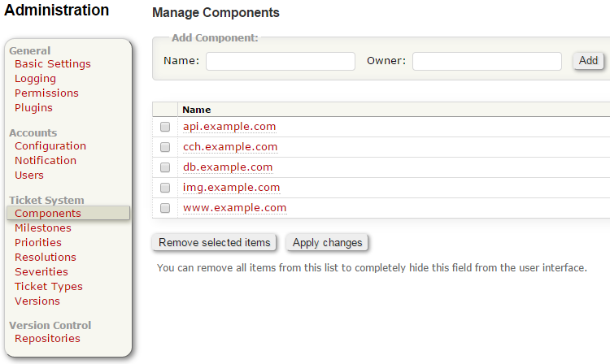
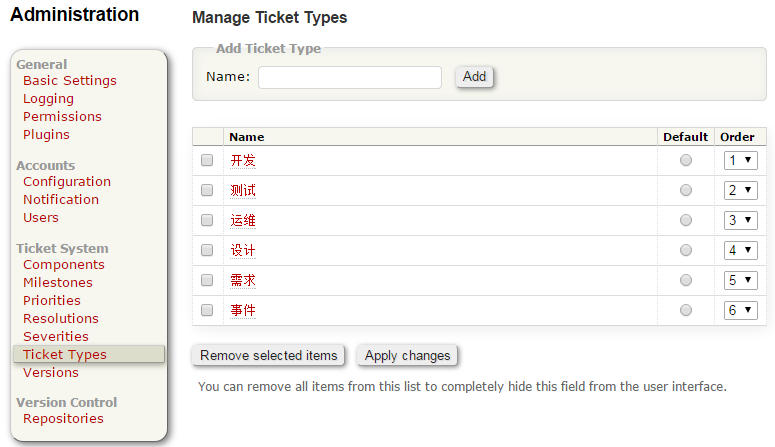

进入Admin初始化Trac系统。
安装后首先分配权限
我习惯于为每个部门创建一个组, 然后创建用户隶属于部门组
过程 1.1. Permissions 设置
-
admin 组
trac-admin trac permission add admin TRAC_ADMIN
-
开发组
创建用户隶属于Development组
trac-admin trac permission add Development BROWSER_VIEW CHANGESET_VIEW FILE_VIEW
-
运维组
trac-admin trac permission add Operations TICKET_ADMIN WIKI_ADMIN
-
产品组
trac-admin trac permission add Production TICKET_ADMIN WIKI_ADMIN
创建用户
trac-admin trac permission add mgmt admin trac-admin trac permission add neo Development trac-admin trac permission add ken Operations trac-admin trac permission add jam Production trac-admin trac permission list
|  |
元件与模块，我通常每个模块对应一个子域名，例如
- www.example.com
- img.example.com
- api.example.com
- cch.example.com
- db.example.com
|  |

下面是我定义的任务单类型
Ticket Types 初始化
- 开发，用于开发事务
- 测试，用户测试工作安排
- 运维，用于运维
- 设计，设计组任务
- 需求，产品与需求
- 事件，突发事件管理
BUG，测试提交BUG
|  |
Repositories
关于版本库项目目录，我习惯与使用该项目对应的域名作为项目目录
/example.com /example.com/www.exampe.com /example.com/images.exampe.com /example.com/user.exampe.com /example.com/admin.exampe.com
默认支持 Subversion, 创建一个仓库记得不要忘记创建下面三个目录 1.branches, 2.tags, 3.trunk
trunk 主干 branches 在下面再创建两个目录development,testing tags 当项目Release 后会在此处打一个标记